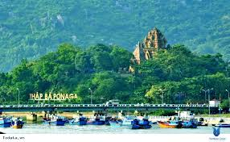

2. THÁP BÀ POGANAR
Chạy dọc con đường ven biển Trần Phú, mở kính xe để thưởng thức vị đặc trưng của biển, hít hà cái nắng cái gió, ngắm nhìn những không gian nhà hàng, khách sạn và những ngôi biệt thự biển Nha Trang xinh xắn lãng mạn đủ sắc màu, đa phong cách 2 bên đường để cảm nhận được sự năng động trẻ trung của thành phố biển Nha Trang, du khách chắc chắn sẽ cảm thấy vô cùng thích thú và bị lôi cuốn. Tháp Bà Ponagar – một ngôi đền nằm trên ngọn đồi nhỏ cách trung tâm TP.Nha Trang khoảng 2km về phía Bắc, ngôi đền nằm trên đầu đường 2/4. Trong thời kỳ hưng thịnh của Đạo Hindu (Ấn Độ giáo), khi Chăm pa trong giai đoạn có tên gọi là Hoàn Vương Quốc thì Tháp Bà Ponagar được xây dựng vào khoảng thế kỷ thứ 8 đến thế kỷ 13, là một trong những quần thể kiến trúc mang đậm bản sắc văn hóa của người Chăm pa, đây cũng là khu quần thể có quy mô lớn nhất còn lại ở khu vực miền Trung Việt Nam.
3. Tháp Bà Ponagar

Tháp Bà Ponagar là công trình kiến trúc cổ kính hoàn mỹ của người Chăm, cách trung tâm TP Du lịch Nha Trang 2km về phía Bắc. Quần thể di tích gồm bốn ngôi tháp, hai miếu thờ, tháp lớn nhất thờ nữ thần Ponagar (tiếng Chăm có nghĩa là Mẹ Xứ Sở).
Sau khi tham quan Tháp Bà Ponagar bạn có thể kết hợp đi tắm bùn tại khu du lịch suối khoáng nóng Tháp Bà ngay gần đó. Giá vé khoảng 100.000VND/người ở hồ tập thể (từ 15 – 20 người) hoặc từ 250.000VND/người nếu sử dụng hồ riêng.
Di chuyển: Xe máy giá thuê khoảng 120 – 150.000VND/ngày hoặc đi taxi
Thời gian tham quan: tối thiểu 5 giờ.4. Chùa Phật Trắng

Toạ lạc trên đồi Trại Thuỷ, chùa Long Sơn còn có tên gọi là Chùa Phật trắng và trước đây còn có tên là Đăng Long Tự. Được xây dựng vào thế kỷ thứ 19, với nhiều lần trùng tu và được xây lại mới vào năm 1940, Chùa Long Sơn mang nét nghệ thuật kiến trúc, điêu khắc mang đậm dấu ấn thời hiện đại. Trải qua hàng trăm năm tồn tại, chùa Long Sơn đã trở thành ngôi chùa lớn nhất trong các ngôi chùa còn lại ở tỉnh Khánh Hoà đến nay, tạo nên một thắng cảnh đẹp nổi tiếng của thành phố Nha Trang xinh đẹp.
Vào mùng 1 và 15 Âm lịch hàng tháng, nhiều du khách lại tìm đến chùa Long Sơn để chiêm bái, ngắm hay hay “đi tìm” sự bình yên và thanh tịnh trong tâm hồn.